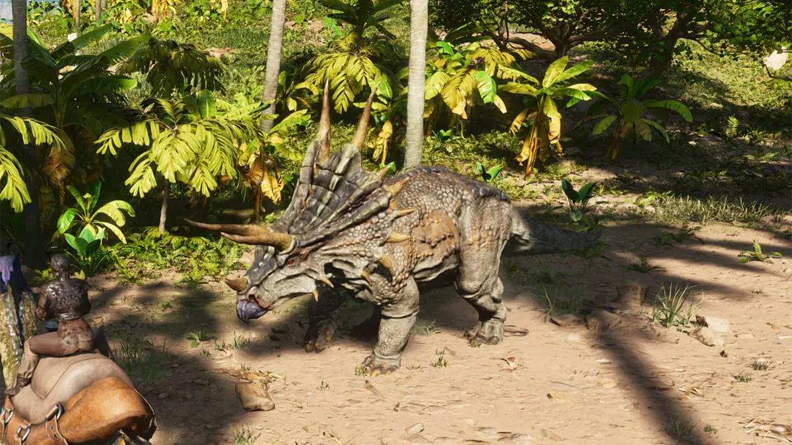
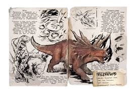

- Species
Triceratops styrax
- Time
Late Cretaceous
- Diet
Herbivore
- Temperament
Short-Tempered
Triceratops
Table of Contents
Overview
This section is intended to be an exact copy of what the survivor Helena Walker, the author of the dossiers, has written. There may be some discrepancies between this text and the in-game creature.

Wild
Apparently a crossbreed of a Triceratops and Styracosaurus, Triceratops styrax has both the characteristic three-horned face of Triceratops and the prominent horned-ridge of Styracosaurus. Normally a very docile grazing animal, Triceratops becomes aggressive once angered. Triceratops will chase down would-be predators (and egg-stealers) with incredible prejudice. Running away from triceratops is harder than it seems due to its ability to charge and ram its target. I've seen Triceratops have an especially hostile reaction to the Tyrannosaurus, with herds attacking en masse. While not very fast, they are deadly in a group.
Domesticated
A common mount for those that ride dinosaurs, Triceratops doubles as pack animal and combat dinosaur. Triceratops' bony ridge works excellently as cover from frontal attack, and the dinosaur's charge is incredibly dangerous. It is largely protective of its kinds if its sense danger. In the presence of larger carnivores that appears as a threat, Triceratops becomes stronger and rallies the effort of its nearby species. It is also capable of harvesting a sizable amount of resources with its horns by shredding fruit from the leaves, making it a very useful work companion for smaller tribes.
Behavior
The Trike is not aggressive until attacked. When attacked, it charges at the enemy and bucks it with its head. Their bucking attack knocks the enemy back, which can make Trikes much more dangerous near cliffs or steep hills. The amount of knockback is significantly influenced by the enemy's weight. However, This attack can be easily dodged, but if it decides to ram and charge forwards, it is better to quickly dodge sideways as its speed when charging is much faster than simply running forwards. The Triceratops is also a herding animal, coming to the aid of others when attacked.
Taming
To tame a Triceratops, survivors should use tranquilizing tools like Tranq Arrows or Darts while maintaining a safe distance. After knocking it out, feed it berries, preferably Mejoberries, or their preferred Kibble to tame it efficiently. Building a simple trap can make the process easier.
Uses
The Triceratops excels as a harvesting creature, capable of gathering berries and thatch in large quantities. Its charge ability is also useful for clearing enemies and moving through dense areas. Additionally, its high health and damage make it a reliable mount for defense and combat.